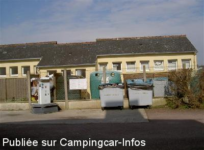
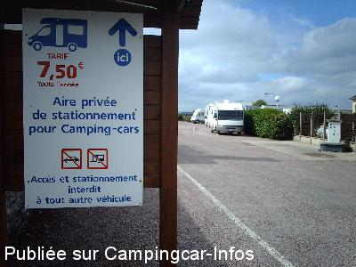
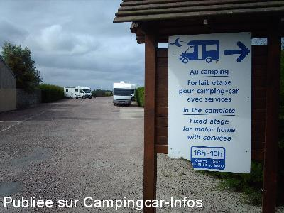
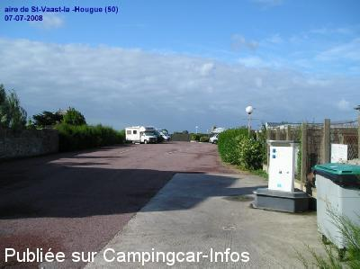
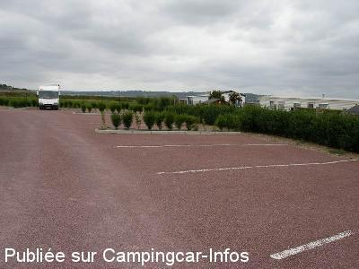

ASN = Aire de services avec stationnement nuit possible de :
SAINT VAAST LA HOUGUE
(N° 690)
Accès/adresse :
Rue Gallouette
50550 SAINT VAAST LA HOUGUE
50550 SAINT VAAST LA HOUGUE
Latitude : (Nord) 49.58347° Décimaux ou 49° 35′ 0′′
Longitude : (Ouest) -1.26764° Décimaux ou -1° 16′ 3′′
Tarif : 2015
Stationnement : 7,80 €
Eau ou 2 h d'électricité : 2 €
Passage d'un agent du camping pour le règlement
Type de borne : EURO-RELAIS
Services :


A 300 m du port et des commerces
Autres informations :
21 emplacements
Aire privée de monsieur Boblin
Tel Office du Tourisme : + 33(0)233 231 932

Le 28/10/2014 par alain et claudine

Le 11/08/2013 par

Le 11/08/2013 par Hendrik

Le 14/07/2008 par pomme.luma

Le 24/06/2006 par mico
de
rjgca
le 26/08/2015 :
Nous sommes passés juste pour manger, nous avons stationner tout au bout
Lors de notre balade tout autour du fort on voit des cc en face face à la mer
Pour y aller prendre direction Quinéville après le camping du rivage et avant la vierge prendre une route (chemin) à gauche et on arrive face à la mer
Nuit calme
Nous sommes passés juste pour manger, nous avons stationner tout au bout
Lors de notre balade tout autour du fort on voit des cc en face face à la mer
Pour y aller prendre direction Quinéville après le camping du rivage et avant la vierge prendre une route (chemin) à gauche et on arrive face à la mer
Nuit calme
de
claire70
le 19/08/2015 :
Nous avons dormi sur cette aire mi-juillet.
Certain un peu cher mais proche du centre ville.
Tout dépend de ce que l'on recherche.
Nuit calme
Nous avons dormi sur cette aire mi-juillet.
Certain un peu cher mais proche du centre ville.
Tout dépend de ce que l'on recherche.
Nuit calme
de
slcgc
le 29/06/2015 :
Aire de CC à éviter absolument, propriétaire très antipathique, il vous attends avec son super 4x4 pour encaisser ses 7.8euro pour un parking goudronné sans un poil d'herbe, sans service, d'une tristesse absolue.
Pour 2 euro de plus je vous conseil le camping municipale de la pointe de Saire à Réville à 5km très bon accueil et très bonne prestations
Aire de CC à éviter absolument, propriétaire très antipathique, il vous attends avec son super 4x4 pour encaisser ses 7.8euro pour un parking goudronné sans un poil d'herbe, sans service, d'une tristesse absolue.
Pour 2 euro de plus je vous conseil le camping municipale de la pointe de Saire à Réville à 5km très bon accueil et très bonne prestations
de
bruhais
le 16/06/2015 :
de passage en juin sur cette air.le propriétaire n'a pas changé, c'est un encaisseur il a rien a faire des camping-caristes la preuve la borne ne fonctionne toujours pas.je passe mon chemin pour aller ailleur dommage pour saint vasst la hougue.
de passage en juin sur cette air.le propriétaire n'a pas changé, c'est un encaisseur il a rien a faire des camping-caristes la preuve la borne ne fonctionne toujours pas.je passe mon chemin pour aller ailleur dommage pour saint vasst la hougue.
de
JRD
le 18/03/2014 :
Nous souhaitions (3 camping-cars) passer une nuit sur cette aire début mars et ce malgré le tarif élevé. La proximité du centre et du port nous y avait conduit.
Ayant voulu nous connecter à la borne électrique nous avons constaté qu'elle ne fonctionnait pas et avons appelé le responsable qui ne nous a pas cru et s'est montré ironique. Il a fallu que nous le lui prouvions (appareil de mesure à l'appui) pour qu'il en convienne.
Fâchés nous lui avons manifesté notre mécontentement et sommes partis à la ferme de Réville à 5 KMS où nous avons été super bien accueillis.
Nous souhaitions (3 camping-cars) passer une nuit sur cette aire début mars et ce malgré le tarif élevé. La proximité du centre et du port nous y avait conduit.
Ayant voulu nous connecter à la borne électrique nous avons constaté qu'elle ne fonctionnait pas et avons appelé le responsable qui ne nous a pas cru et s'est montré ironique. Il a fallu que nous le lui prouvions (appareil de mesure à l'appui) pour qu'il en convienne.
Fâchés nous lui avons manifesté notre mécontentement et sommes partis à la ferme de Réville à 5 KMS où nous avons été super bien accueillis.
de
boulent
le 12/05/2013 :
je suis passé la semaine derniere et je trouve qu il est super bien placé ,à coté du centre ville et c'est calme et aussi prés du port et des differents lieux à visiter.
je suis passé la semaine derniere et je trouve qu il est super bien placé ,à coté du centre ville et c'est calme et aussi prés du port et des differents lieux à visiter.
de
rebut
le 07/08/2012 :
Nous nous sommes présentés à la réception avec notre T3 aménagé Westfalia mais l'accès à l'aire de stationnement nous a été refusé sous prétexte que nous ne sommes pas en camping car ??? . Bigre !!! nous sommes pourtant autonomes car nôtre véhicule est équipé d'eau froide, d'eau chaude, d'un chauffage stationnaire, d'un frigidaire, d'une table de cuisson , de toilettes sèches et même d'une douche. Comme le réceptionniste n'a rien voulu entendre, nous avons bien sûr refusé sa proposition d'emplacement dans son camping. Nous avons préféré fuir la rue Gallouette et avons passé la nuit à la pointe de la Saire à bord de notre camping car, en bordure de mer face à l'ile de Tatihou
Petit camping car passez votre chemin
Nous nous sommes présentés à la réception avec notre T3 aménagé Westfalia mais l'accès à l'aire de stationnement nous a été refusé sous prétexte que nous ne sommes pas en camping car ??? . Bigre !!! nous sommes pourtant autonomes car nôtre véhicule est équipé d'eau froide, d'eau chaude, d'un chauffage stationnaire, d'un frigidaire, d'une table de cuisson , de toilettes sèches et même d'une douche. Comme le réceptionniste n'a rien voulu entendre, nous avons bien sûr refusé sa proposition d'emplacement dans son camping. Nous avons préféré fuir la rue Gallouette et avons passé la nuit à la pointe de la Saire à bord de notre camping car, en bordure de mer face à l'ile de Tatihou
Petit camping car passez votre chemin